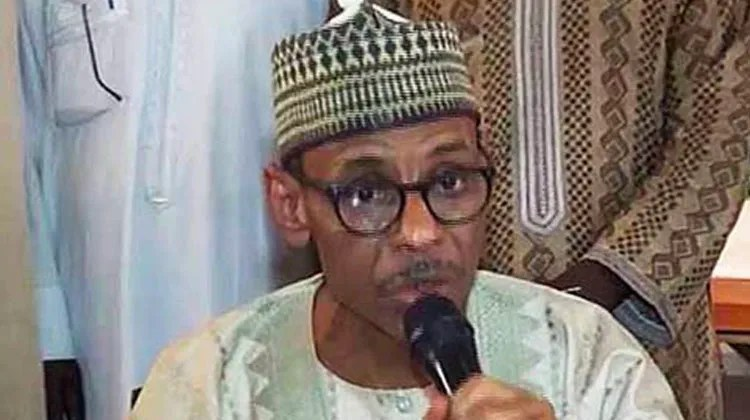

2027: Kaduna APC rally won’t erase poverty, insecurity – PRP

The Peoples Redemption Party has criticised the All Progressives Congress over its rally in Kaduna, saying campaign events cannot divert attention from poverty and insecurity. In a statement issued in Abuja, PRP National Chairman Dr Hakeem Baba-Ahmed described the gathering as an expensive effort to project support for the ruling party ahead of the 2027 general elections. He questioned the alleged spending on the event, but the statement did not provide evidence for the amount or establish how it was funded.
Baba-Ahmed said economic hardship and security concerns would remain central to public debate, and argued that political gatherings could not substitute for a record of effective government. He said Nigerians should not interpret the rally as proof that they were satisfied with the APC’s performance. The criticism comes as parties begin positioning themselves ahead of the next general election, when the Tinubu administration’s record is expected to feature in political debate.
The PRP chairman also raised concerns about President Bola Tinubu’s health and called for close medical scrutiny and management. The statement offered no medical evidence to support those concerns. Baba-Ahmed further alleged that attacks and abductions continued during the rally, including abductions from homes in Kaduna metropolis, while police were deployed to protect billboards at the event.
He condemned the killing of Sheikh Yahaya Masussuka at his home in Dutsin-Ma, Katsina State, and called for those responsible to be arrested and prosecuted. Baba-Ahmed said citizens had a right to expect protection regardless of their political views, and urged the government to prioritise security and welfare. He maintained that a credible election in 2027 would end the APC’s leadership, while saying Nigerians would continue to demand safety and dignified living conditions in the meantime.
Source: Punch